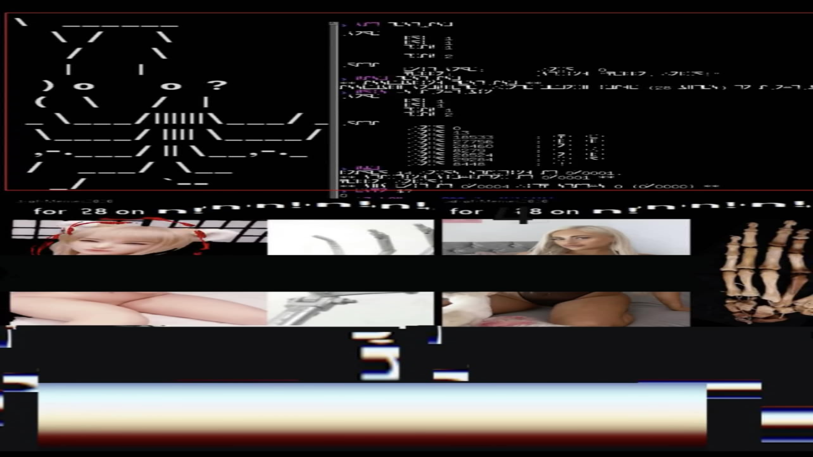

<!DOCTYPE html>
<html lang="en">
<head>
    <meta charset="UTF-8">
    <meta name="viewport" content="width=device-width, initial-scale=1.0">
    <title>EXOSKELETAL</title>
    <style>
        body, html {
            margin: 0;
            padding: 0;
            height: 100%;
            width: 100%;
            background-color: black;
            display: flex;
            justify-content: center;
            align-items: center;
            overflow: hidden;
        }

        .gif-container {
            display: flex;
            gap: 20px;
            padding: 20px;
        }

        img {
            max-width: 45vw;
            max-height: 80vh;
            object-fit: contain;
        }

        /* Fullscreen Meme Styles */
        .fullscreen-meme {
            max-width: 100vw;
            max-height: 100vh;
            object-fit: contain;
            animation: none; /* Keeps it clear, or add flash-a/b if you want it to flash too */
        }

        /* Overlay to catch initial click for audio */
        #audio-overlay {
            position: fixed;
            top: 0;
            left: 0;
            width: 100%;
            height: 100%;
            z-index: 999;
            cursor: pointer;
            background: transparent;
        }

        /* First image animation */
        .alt-1 {
            animation: flash-a 0.5s infinite steps(1);
        }

        /* Second image animation (Inverted start) */
        .alt-2 {
            animation: flash-b 0.5s infinite steps(1);
        }

        @keyframes flash-a {
            0% { filter: invert(0%) grayscale(0%); }
            50% { filter: invert(100%) grayscale(100%); }
        }

        @keyframes flash-b {
            0% { filter: invert(100%) grayscale(100%); }
            50% { filter: invert(0%) grayscale(0%); }
        }
    </style>
</head>
<body>

    <div id="audio-overlay"></div>

    <div id="content-wrapper">
        <div class="gif-container" id="default-gifs">
            
            
        </div>
    </div>

    <audio id="bg-audio" loop>
        <source src="exoskeletal/deathClockMachine2.mp3" type="audio/mpeg">
    </audio>

    <script>
        // 1. Roll the dice (1 in 9 chance)
        const roll = Math.floor(Math.random() * 6) + 1; // Generates 1 through 6
        
        if (roll === 1) {
            const wrapper = document.getElementById('content-wrapper');
            // Swap out the dual-gifs for the single fullscreen meme
            wrapper.innerHTML = ``;
        }

        // 2. Audio and Overlay handling (unaffected by the image swap)
        const overlay = document.getElementById('audio-overlay');
        const audio = document.getElementById('bg-audio');

        overlay.addEventListener('click', () => {
            // Play audio
            audio.play().catch(error => console.log("Playback failed:", error));
            
            // Remove the overlay so it doesn't block future clicks/interactions
            overlay.remove();
        });
    </script>

</body>
</html>